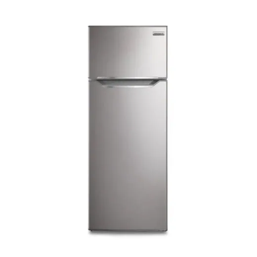
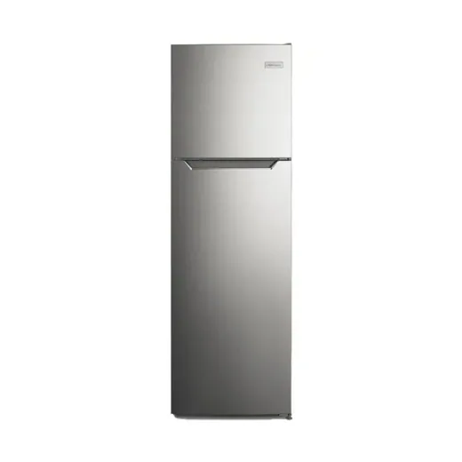
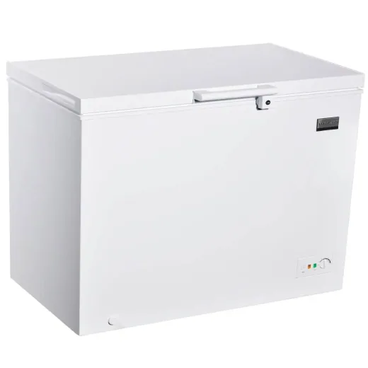

Inicio › Refrigeradoras y congeladores

Frigidaire · Modelo FFH09S3N5AW
Congelador Frigidaire · 9 pies · FFH09S3N5AW
L 8,495
Más barato en Gallo más Gallo · ahorras hasta L 4 frente a la tienda más cara
Precio en cada tienda
| Tienda | Precio | Antes | Disponibilidad | |
|---|---|---|---|---|
| Gallo más Gallo | L 8,495 | Disponible | Ver en tienda › | |
| Elektra | L 8,499 | Disponible | Ver en tienda › |
Precios referenciales tomados de cada tienda el 21 de noviembre de 2026. El precio válido es el que muestra la tienda al comprar.
Historial de precio
Lo seguimos desde el 1 de noviembre. Precio más bajo registrado: L 8,495 en Gallo más Gallo (1 de noviembre), igual que hoy. El precio no ha cambiado en ese tiempo.
Características
| Tamaño (Pies) | 9 |
|---|---|
| Marca | Frigidaire |
| Modelo | FFH09S3N5AW |
| Tipo | Congelador Horizontal (Chest Freezer) |
| Capacidad | 9 Pies cúbicos (Aprox. 248 a 255 Litros) |
| Sistema de Descongelamiento | Manual con tapón de drenaje frontal para fácil limpieza |
| Control de Temperatura | Termostato mecánico ajustable de múltiples niveles |
| Cesta Organizadora | Incluye canastilla de alambre de acero removible para organizar alimentos pequeños |
| Acabado y Color | Blanco (White) con tirador de puerta ergonómico integrado |
| Seguridad | Cerradura de seguridad con llave en la puerta |
| Gas Refrigerante | R600a (Ecológico y eficiente) |
| Alimentación Eléctrica | 115V / 60 Hz |
| Ancho | Aprox. 95,5 cm |
| Alto | Aprox. 85 cm |
| Profundidad | Aprox. 62,5 cm |
| Peso | Aprox. 31 kg |
Descripción
Congelador Horizontal Frigidaire 9 Pies Cúbicos FFH09S3N5AW – conservación inteligente con el espacio que necesitás El Congelador Horizontal Frigidaire FFH09S3N5AW de 9 pies cúbicos es la combinación perfecta entre capacidad, eficiencia y versatilidad. Diseñado para los hogares hondureños que buscan almacenar más alimentos sin aumentar el consumo energético, este congelador ofrece tecnología avanzada, amplio espacio interior y funciones prácticas para mantener la frescura de cada producto por más tiempo. Ahorro inteligente con tecnología Inverter Su compresor Inverter optimiza el consumo de energía y mantiene una temperatura más estable, ayudando a conservar mejor los alimentos mientras reduce el gasto eléctrico en el hogar. Función 3 en 1 para adaptarse a cada necesidad Disfrutá de la flexibilidad de utilizarlo como refrigerador, conservador o congelador. Su sistema 3 en 1 te permite aj
Otros refrigeradoras y congeladores Frigidaire

Refrigeradora Frigidaire · 7.2 pies · Top Mount · FRTY07G3HVSL 8,997En 2 tiendas · más barato en La Curacao Refrigeradora Frigidaire · 8 pies · FRDM22F3HPSL 7,595En 3 tiendas · más barato en Gallo más Gallo
Refrigeradora Frigidaire · 8 pies · FRDM22F3HPSL 7,595En 3 tiendas · más barato en Gallo más Gallo Refrigeradora Frigidaire · 5 pies · FRTM13G3HPWL 7,099En Elektra
Refrigeradora Frigidaire · 5 pies · FRTM13G3HPWL 7,099En Elektra
Refrigeradora Frigidaire · 9 pies · Top Mount · FRT09F3N4AWL 9,990En 2 tiendas · más barato en Diunsa Congelador Frigidaire · 5 pies · FFC05C4HPWL 6,999En Elektra
Congelador Frigidaire · 5 pies · FFC05C4HPWL 6,999En Elektra Refrigeradora Frigidaire · 5 piesL 6,999En Lady Lee
Refrigeradora Frigidaire · 5 piesL 6,999En Lady Lee
Congelador Horizontal Frigidaire 9CP FFCD25C4HUWL 9,995En Gallo más Gallo Refrigeradora Frigidaire · 8 piesL 9,999En Lady Lee
Refrigeradora Frigidaire · 8 piesL 9,999En Lady Lee